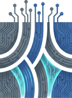
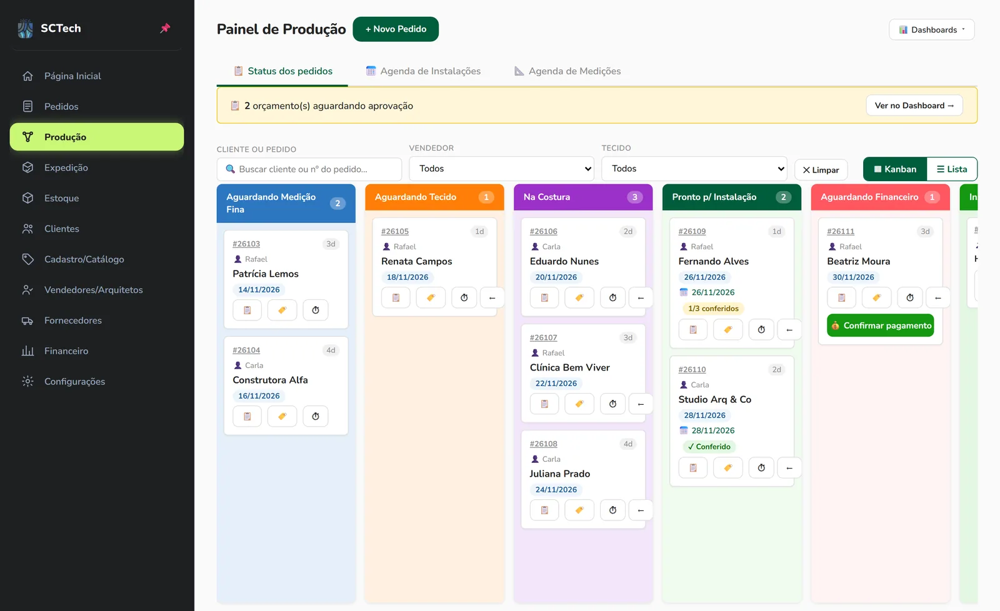
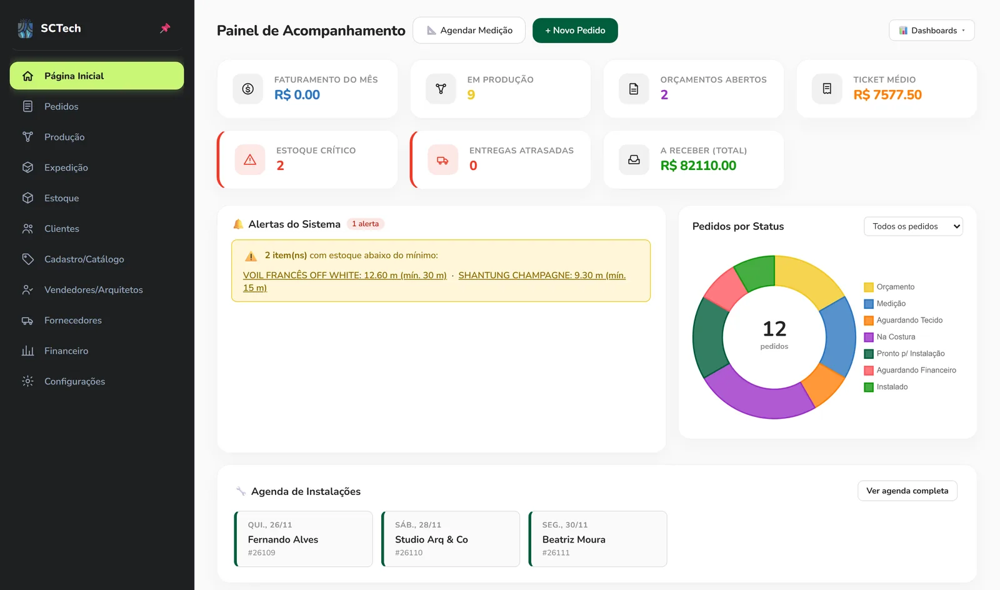
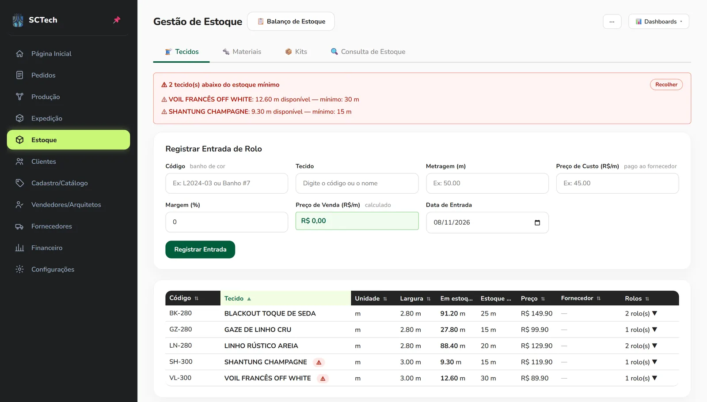
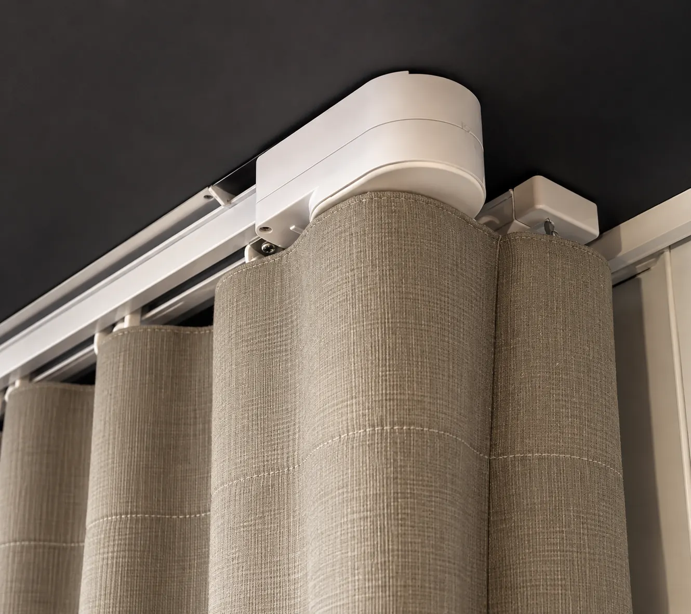

01
Produção visível
Pedidos em etapas claras, da medição à instalação.
Ver fluxo ↗
SCTech Falar com especialista ↗Gestão para empresas de cortinas
O SCTech conecta orçamento, medição, produção, estoque e instalação em uma única visão — para sua empresa vender com clareza e entregar sem improviso.

Feito para quem vende, produz e instala sob medida.
Tudo conectado
Em vez de planilhas, conversas perdidas e retrabalho, cada pedido percorre sua empresa com informações técnicas, responsáveis e prazos sempre visíveis.
Menos ruído. Mais direção.
O painel reúne o que pede atenção agora: vendas, pedidos em produção, agenda, estoque e financeiro. É gestão prática para a rotina de empresas de cortinas.
Conhecer os módulos →
Uma plataforma, várias frentes
Escolha onde começar. O SCTech organiza a operação de ponta a ponta, sem deixar o trabalho pesado para sua equipe.
Pedidos em etapas claras, da medição à instalação.
Ver fluxo ↗Medidas, tecidos e detalhes no mesmo lugar.
Mais precisão ↗
Controle materiais antes que faltem.
Sem surpresas ↗
Agenda, responsáveis e entregas acompanhadas até o final.
Ver agenda ↗Da primeira conversa à entrega
Monte uma proposta completa, com cálculo e prazo.
Registre informações que a produção precisa receber.
Acompanhe o status sem procurar em planilhas.
Agende e confirme cada etapa até a entrega.
Conheça o SCTech
Veja em uma demonstração como o SCTech se adapta à rotina da sua empresa de cortinas.
Falar pelo WhatsApp →Você será direcionado ao WhatsApp para falar com nossa equipe.